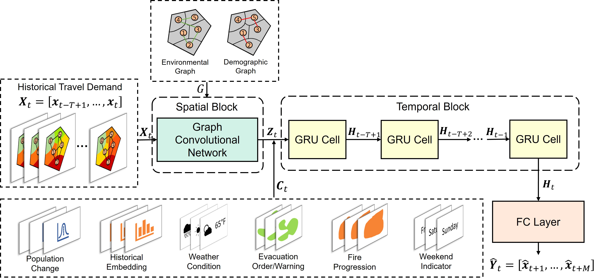
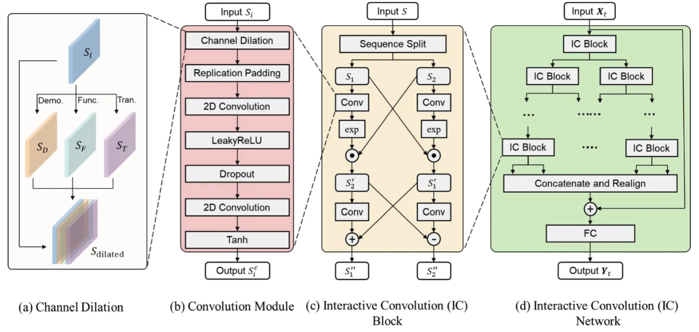
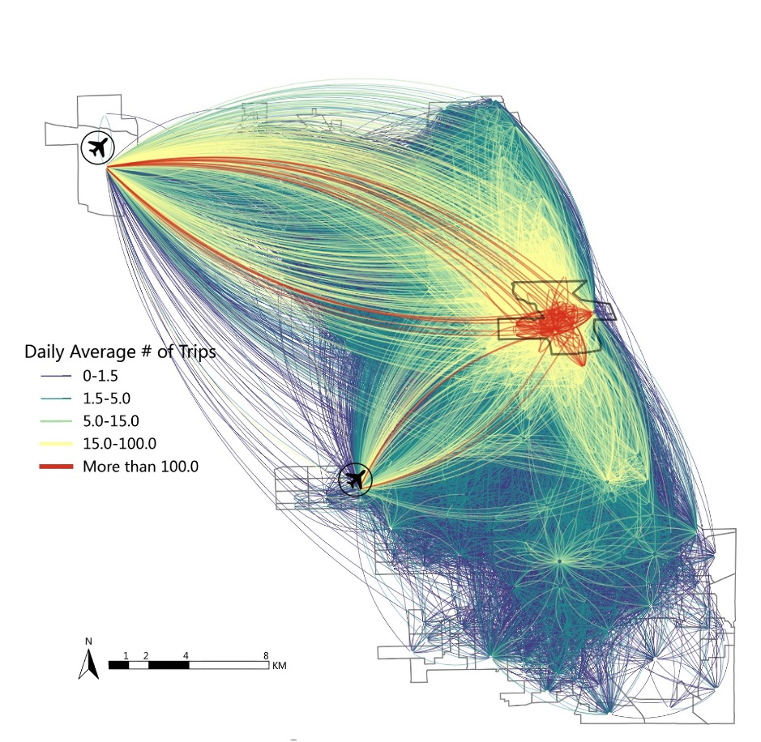

Research
Situational-aware Multi-graph Convolutional Recurrent Network (SA-MGCRN) for Travel Demand Forecasting during Wildfires
|  | In this project, we developed a new deep learning model, i.e., Situational-Aware Multi-Graph Convolutional Recurrent Network (SA-MGCRN), along with a model updating scheme to achieve real-time forecasting of travel demand during wildfire evacuations. The travel demand was inferred from large-scale mobile device location data, and we also considered the data delivery delay issues and offered crtical insights for emergency management practices. |
[Link] Zhang, X., Zhao, X., Xu, Y., Nilsson, D., & Lovreglio, R. (2024). Situational-aware multi-graph convolutional recurrent network (sa-mgcrn) for travel demand forecasting during wildfires. Transportation Research Part A: Policy and Practice, 190, 104242.
Spatial-Temporal Multi-Graph Transformer for Shared E-scooter Demand Forecasting
 |
In this project, we proposed a Spatial-Temporal Multi-Graph Transformer (STMGT) model to forecast the real-time shared e-scooter demand in Washington, D.C. and Austin, TX. The STMGT model uses a graph convolutional network (GCN) based on adjacency graph, functional similarity graph, demographic similarity graph, and transportation supply similarity graph to attach spatial dependency to temporal input (i.e., historical demand). It outperforms 14 selected state-of-the-art benchmark travel demand forecasting models. |
[Link] Xu, Y., Zhao, X., Zhang, X., & Paliwal, M. (2023). Real-time forecasting of dockless scooter-sharing demand: A spatio-temporal multi-graph transformer approach. IEEE Transactions on Intelligent Transportation Systems, 24(8), 8507-8518.
Interactive Convolutional Network for Shared E-scooter Demand Forecasting
|  | In this project, we proposed a deep learning model named Interactive Convolutional Network (ICN) to forecast spatiotemporal travel demand for shared micromobility. The proposed model develops a novel channel dilation method by utilizing multi-dimensional spatial information (i.e., demographics, functionality, and transportation supply) based on travel behavior knowledge for building the deep learning model. It outperforms all selected state-of-the-art deep learning benchmarks by both accuracy and computational efficiency. |
[Link] Xu, Y., Ke, Q., Zhang, X., & Zhao, X. (2024). ICN: Interactive convolutional network for forecasting travel demand of shared micromobility. GeoInformatica, 1-26.
Clustering-aided Ensemble Method for Ridehailing Demand Prediction
|  | In this project, we proposed an ensemble-learning framework named Clustering-aided Ensemble Method (CEM) to forecast ridehailing services demand. We applied K-Means to group the ridehailing-trip Origin-Destination (OD) Paris into five clusters based on their unique spatial characteristics, built cluster-specifc model, and ensembled the models together for final predictions. The framework can effectively account for the influence of the well-known Spatial Heterogeneity and produce promising prediction accuracy. |
[Link] Zhang, X., & Zhao, X. (2022). Machine learning approach for spatial modeling of ridesourcing demand. Journal of Transport Geography, 100(C).